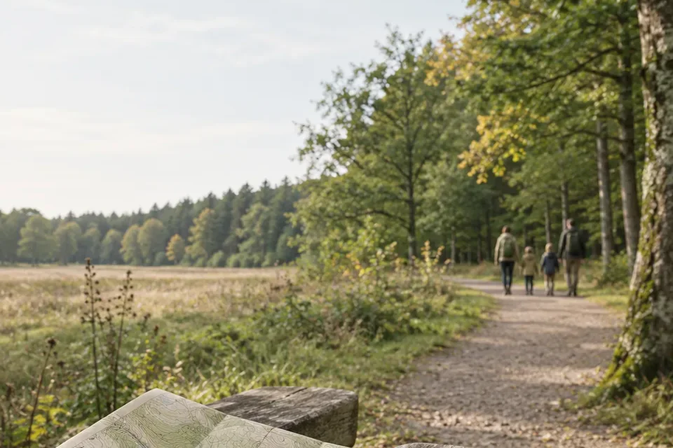

Skill-kurser
Fordyb jer i én færdighed
Korte, målrettede kurser kan bygge videre på Explorer-forløbet eller tages, når familien har et konkret behov. Aktuelle temaer offentliggøres kun, når indhold, instruktør og praktiske rammer er klar.
Se aktuelle kursusidéer